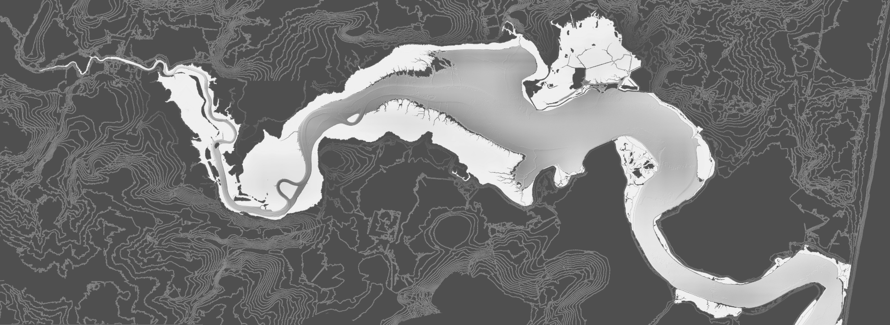

A proprietary terrain intelligence system developed by Studio Oddscape. Built using advanced geospatial frameworks such as GDAL and Rasterio, the engine transforms LiDAR and elevation data into readable landscape insight — revealing patterns, risk, and opportunity across land and coastal environments.
Working across estates, coastal environments, and complex landholdings, Oddscape interprets landscape character and terrain processes — identifying patterns in elevation, drainage, and erosion that are not immediately visible on the ground.
Providing a clear, evidence-based foundation for informed decisions, reducing risk and supporting more effective, responsible use of land before intervention.
A structured understanding of land before design, construction, or investment — aligned to the scale, complexity, and strategic importance of each site.
Most land risks are not visible at first glance. Detailed terrain analysis reveals how a site actually behaves.
Studio Oddscape applies data-led analysis to support landscape planning, design, and land management.
Work is grounded in landscape character, environmental sensitivity, and long-term change — ensuring decisions respond to both physical processes and place-based context.
The aim is simple: work with the land, not against it.